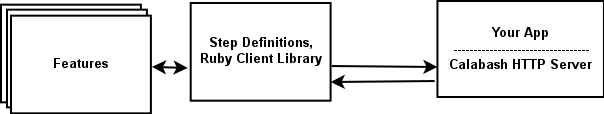

Calabash
Calabash: Functional Testing for Mobile Apps
Jonas and I are proud to release Calabash, a new functional testing tool for mobile apps based on Cucumber. LessPainful has been developing Calabash over the last year pursuing its expressive power, simplicity and stability. Calabash is the technology that powers device automation and test execution at LessPainful, but as of today it is released as open source to the general public: http://github.com/calabash.
The short story
The following section, Introducing Calabash, is intended to describe Calabash for people who don’t already know Cucumber, or who haven’t been looking at functional testing for mobile apps. If that doesn’t apply to you, you can go to the Rationale and Benefits section – otherwise just continue reading :)
Introducing Calabash
Calabash consists of two libraries calabash-android and calabash-ios. As you can imagine, calabash-android is the automation and testing library for Android, and similarly calabash-ios is for iOS.
Calabash can be considered the underlying low-level libraries that empower the Cucumber tool to run automated functional tests on Android and iOS phones and tablets as well as on simulators. These low-level libraries enable QA, business staff and developers to work at a high level: they write tests in a natural language using the terms and concepts of their business domain. For example, here is part of a test written with Calabash.
Feature: Rating a stand
Scenario: Find and rate a stand from the list
Given I am on the List
Then I should see a "rating" button
And I should not see "Dixie Burger & Gumbo Soup"
And take picture
Then I touch the "rating" button
And I should see "Dixie Burger & Gumbo Soup"
And take picture
When I touch "Dixie Burger & Gumbo Soup"
Then I should see details for "Dixie Burger & Gumbo Soup"
When I touch the "rate_it" button
Then I should see the rating panel
Then I touch "star5"
And I touch "rate"
And take picture
If you don’t already know Cucumber, it may surprise you that this description is actually an executable test specification that is part of a test suite for an iPhone app!
In Cucumber and Calabash, one defines so-called feature files, that describe the intended behaviour of the app. You can think of a feature file as an executable test specification of a use case of the app. In our example above, we have a feature which describes functionality for rating a food stand at Roskilde Festival. A feature consists of one or more scenarios, corresponding more or less to the possible outcomes of the use cases. In our simple example we have only one scenario the “sunshine” scenario where we find a stand and rate it five stars. There would usually also be scenarios testing other things, e.g., error scenarios. Finally, each scenario consists of a number of steps. The usual form of a feature is:
Feature: name...
Scenario: ...
Step
Step
...
Scenario: ...
Step
Step
...
In our example, each line after “Scenario”
corresponds to a step. In calabash, a step does one of three things:
makes a user action (like touch, swipe, scroll, etc.), makes an
assertion (like Then I should see details for "..") or takes a
screen-shot. The screen-shot step takes a snapshot of how your
application looks at the point in the test. Screenshots can then be
inspected for graphical errors that are hard to catch using
assertions. Also, comparing screenshots across many different Android
or iOS devices and operating system can be really useful. This type of visual test report, is part of what the LessPainful Service offers. You can see an example our feature for the Roskilde app above in the LessPainful section.
Overview: How it works
We’ll describe briefly how Calabash works. You can get more details in the blog posts on Calabash Android and Calabash iOS. You can also go straight to the sources: http://github.com/calabash/calabash-android, http://github.com/calabash/calabash-ios and http://github.com/calabash/calabash-ios-server.
Calabash iOS consists of two parts: a client library written in Ruby, and calabash.framework, a server framework written in Objective-C (a Clojure/JVM version of the client is coming too!). To use calabash you make a special test target in XCode that links with calabash.framework. The application is otherwise unchanged. The server framework will start an HTTP server inside your app that listens for requests from the client library.
The cucumber tool executes your feature files which contain steps that are defined either in predefined or custom (user defined) steps definitions. Custom steps are written using the API that the client library exposes. The API methods make HTTP requests to the server, which does things like finding components in the UI and taking actions on them. Here is an illustration:

Calabash Android is slightly different…(Jonas)
Rationale and Benefits
Why create a new open source functional test library? There are several reasons.
- Uniform interface across platforms
- We wanted a single interface for specifying the behaviour of mobile apps across platforms. Many companies are creating the same app (or almost the same app) for both iOS and Android, and pay double costs when it comes to testing. With Calabash, you have the option of maintaining only one feature file per app use-case, even if you are developing for both Android and iOS. The platform or app differences can be factored out into so-called step definitions which are different per platform. (If you're thinking Windows Phone? Then, yes, it is an option, but we haven't gotten round to it yet ;)
- Cucumber
- We wanted a high-level, domain-centric language for specification. The Cucumber technology gives us this. A Cucumber feature file can be written by QA, domain experts or developers; developers or technical test staff can then write step definitions to realize the steps on each platform (possibly using one of the many predefined steps or APIs).
- Authenticity
- We wanted a test automation technology that is as authentic as possible. Test must be able to run equally well on physical, non-jailbroken devices as on simulators. The LessPainful Service takes this to the next level, by providing a test execution environment for running tests concurrently on many different devices (we even do rotation using little robots!).
- Expressive power
- There are some cool functional testing technologies out there already (like Robotium, Frank, NativeDriver, KIF, Zucchini and UIAutomation). However, in our opinion each of them have advantages and disadvantages, and none of them fulfilled our needs completely (see details in the blog posts Calabash Android and Calabash iOS). We wanted a technology with expressive power: support for complex gestures (swipes, pinch, etc), embedded webviews, rotation, backgrounding ... all while running on non-jailbroken devices.
- Extensibility and Community
- This is part of the reason why we are open sourcing Calabash. We want you to test your apps and ship better quality. We want Calabash users to be able to extend Calabash itself, and we want to build an open source community that is enthusiastic about the technology.
LessPainful
What is the role of LessPainful in regard to Calabash, and what services do we provide?
LessPainful is the founder of Calabash: we are its core committers and we are dedicated to continuously improving it. Our business model consists of two offerings.
First, we offer commercial support, training and consulting on automated testing of mobile apps. We can also help setup advanced continuous integration build environments on iOS and Android.
Secondly, LessPainful provides a test execution service which runs Calabash tests “in the cloud”. The service automates running tests concurrently on several physical, non-jailbroken Android and iOS phones and tablets. We support several operating system versions, as well as device language and regional settings.
The LessPainful service provides visual test reports. This lets you easily compare test results and the visual appearance of your app across different devices. Here is an example test report from our example “food stand” app:
{kind=link}
The LessPainful Service is designed to support continuous integration by providing a web service for running tests with every commit or on a daily basis.
Here is part of an Android test running on … different models!
{kind=link}